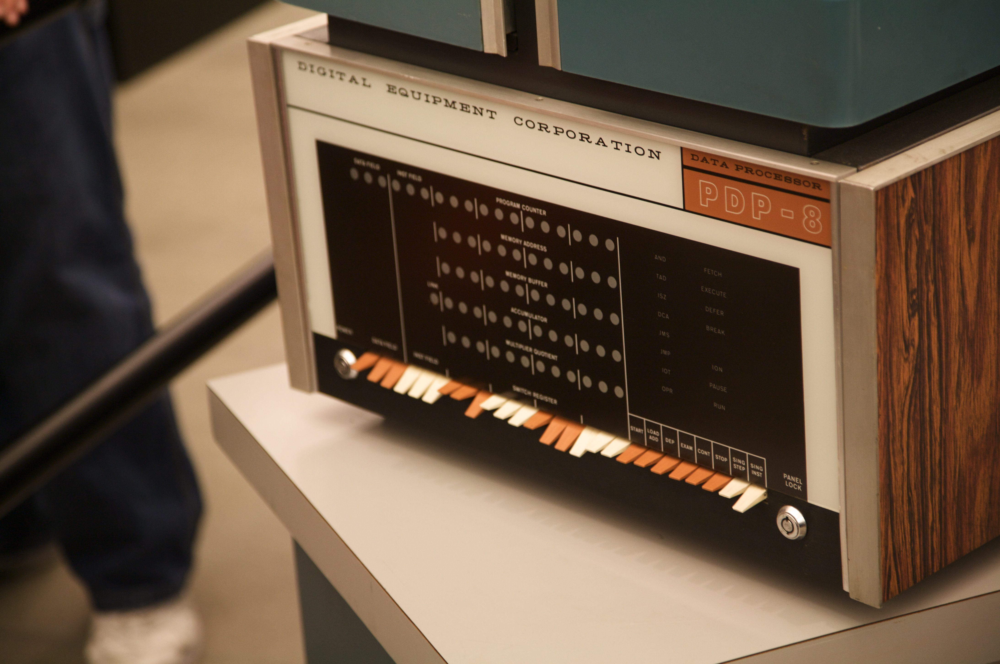
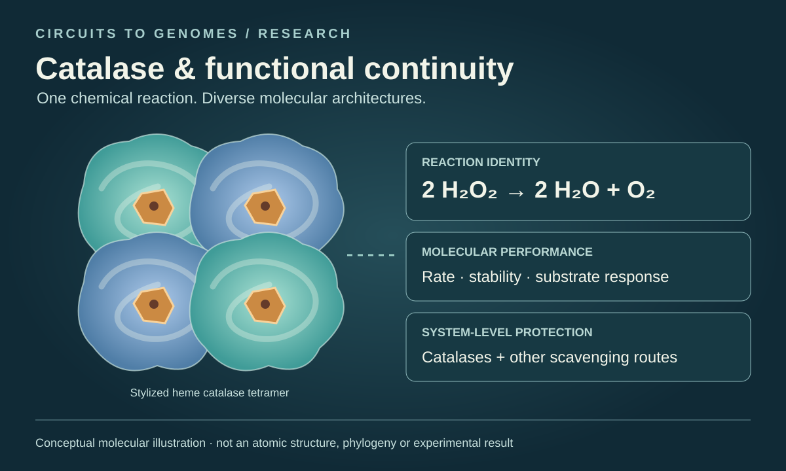
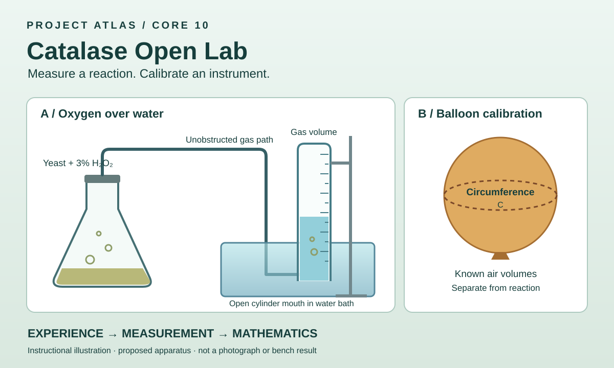
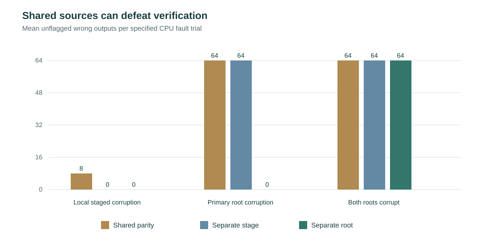
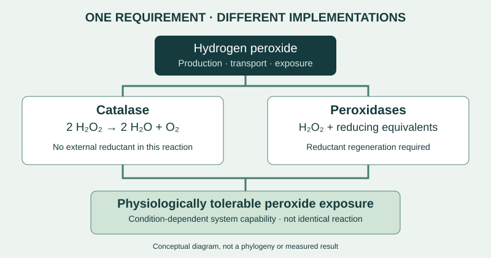
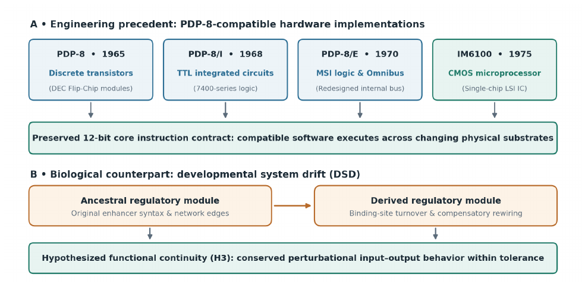
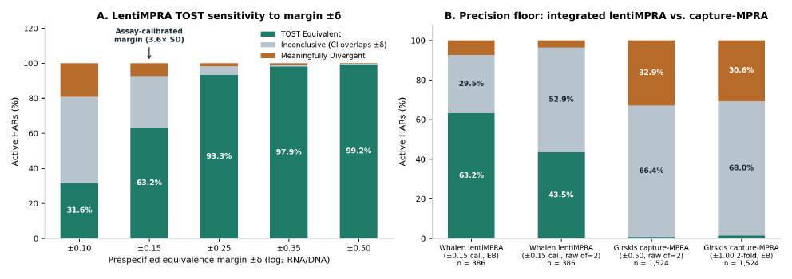

PAPER 01 / THEORY
Architectural Economy
From historical computers to modern parallel architectures.
Explore Paper 1 →PROJECT ATLAS / RESEARCH & SCHOLARSHIP
Architectural economy, functional continuity, and the reciprocal investigation of computing and biology.
THE ORIGINAL QUESTION
The PDP-8 inspired a question about functional continuity. Hydrogen peroxide management now provides a chemically defined biological model; an open kitchen laboratory gives everyone a physical entry point.
Start with the Open Lab Research on GitHub
Portal v1.2 · Working manuscripts · Not peer reviewed
Updated 27 November 2026

RESEARCH PORTAL / 27 NOVEMBER 2026
Three complementary scholarly tracks, a physical laboratory, and an independent companion archive. Begin with the route that fits your interests.
PAPER 01 / THEORY
From historical computers to modern parallel architectures.
Explore Paper 1 →
PAPER 02 / CURRENT BIOLOGY
Hydrogen peroxide management across molecular implementations.
Explore Paper 2 →
PAPER 03 / METASCIENCE
Human-directed, accountable AI-assisted inquiry.
Explore Paper 3 →
OPEN LAB / HANDS-ON
Yeast, peroxide, oxygen measurements and balloon mathematics.
Start the Open Lab →Earlier research is still accessible. Primate enhancer FEM and historical evidence remain an independent companion study. No prior manuscripts were deleted.
Different technical implementations can preserve specified behavior. Biological evolution may retain a performance envelope despite molecular change; that must be tested, not assumed. Research roadmap.
Working manuscripts · independent validation pending · Paper 2 is a developmental Markdown manuscript. Paper 3 v0.6 Markdown and a separately listed, unverified review PDF are available.
01 / THEORY AND COMPUTATION
Documented v11 · 33 pages · 26 November 2026 · v12 review PDF also available
The PDP-8 supplied the originating observation: a stable instruction-set contract can survive changes in hardware. The H100 provides a complementary lens on accumulated engineering, parallelism, scale and coordination, not a direct PDP-8 descendant. We use these examples to formulate biological questions, not to assert identical mechanisms.
Read documented v11 PDF v12 review PDF (unverified) Source and revision record

Prior results and limitations are available under Research archive.
02 / EMPIRICAL SCIENCE · CURRENT FOCUS
Hydrogen peroxide management as a model of architectural conservation and molecular change.
v0.1 · 27 November 2026 · Developmental manuscript, not a peer-reviewed publication
Read current Paper 2 Research protocol · Scope decision

Cells exposed to hydrogen peroxide must maintain a tolerable exposure envelope. Catalases can dismutate peroxide into water and oxygen; peroxidases reduce it using reducing equivalents. Concentration, regulation, transport and resource availability affect protection. Peroxide is also a signaling molecule: complete removal is not the goal.
In 16 purified catalases, observed maximum rates span about 15-fold, while heat-inactivation times span four orders of magnitude. These are published summary measurements, not a newly discovered mechanism. Switala & Loewen (2002); Zamocky et al. (2008).
In E. coli, Ahp and catalases contribute condition-dependent scavenging; combined losses impair protection. Seaver & Imlay (2001), scavenging and peroxide flux. These studies provide a physiological benchmark, not direct evidence of historical substitution.
| Prospective hypothesis | Test |
|---|---|
| H-P1 · Molecular architecture | Do structural features improve held-out prediction of enzyme performance beyond sequence and assay baselines? |
| H-P2 · System architecture | Do complementary capacities and dependencies predict protection beyond total capacity? |
| H-P3 · Evolutionary continuity | Can independently sampled lineages retain specified protection envelopes despite implementation changes? |
Catalase pilot and data · Descriptive system contrasts. External validation and comparable evolutionary phenotypes are outstanding. No new evolutionary mechanism is claimed.
Try the physical experiment Explore the catalase research exhibit
03 / METASCIENCE AND EDUCATION
v0.6 · integrated Markdown review manuscript · 26 November 2026
How can a human investigator direct sophisticated inquiry with AI assistance while retaining responsibility for evidence, reproducibility and interpretation? Agreement between AI systems is not independent verification. The transition from primate enhancers to peroxide management illustrates a research-design decision, not a new finding or a completed revision to Paper 3.
Read current Paper 3 (v0.6 Markdown) v0.6 review PDF (unverified) Prior v0.5 PDF · Archive
Experience before equation: students can capture real measurements, analyze the data, publish a record and invite criticism. AI can assist at each stage but cannot replace physical evidence or qualified review.

OPEN LABORATORY / EXPERIENCE BEFORE EQUATION
Begin with baker's yeast and household 3% hydrogen peroxide. Collect gas over water, compare yeast quantities, controls and repeated trials, then calibrate a balloon with known air volumes. The balloon activity is separate from the reaction. The lab design is not yet bench validated; use the teacher guide and supervision.
GitHub release package, installer and checksums
The yeast-dose experiment changes the amount of biological material, not the enzyme implementation. It teaches measurement of function; comparative biochemical, structural and cellular evidence is required for the larger evolutionary question.
HISTORICAL DEVELOPMENT / COMPANION RESEARCH
Former Paper 2. The v1.2 review PDF, previous versions, original findings, negative results and validation materials are preserved. A v1.3 review PDF exists but its contents have not been independently inspected. The project did not retract the earlier work; it changed the primary biological model.
Read documented v1.2 PDF All versions · Validation · Negative prediction pilot
Preservation ledger · Publication inventory · Historical checksums · Current resource index · Master curriculum
ARCHIVED EVIDENCE & LIMITS
Reported PDP-8 code-word savings from sharing a multiplication routine at 64 tasks, with increased modeled fault liability.
K562 pilot across 408 genes. The original predicted association was not supported.
Reported enhancer equivalence with / without variance moderation, same selected margin, 386 fragments.
Mean modeled internal nodes for dedicated versus shared computation at 32 outputs; 360/360 equivalence checks passed.
| Hypothesis | Evidence status |
|---|---|
| H1 · Architectural economy | Supported within specified computational models; fault-type sensitive. |
| H2 · Sequence constraint | Not supported in exploratory K562 pilot. |
| H3-M · Molecular equivalence | Partial reporter-level evidence; independent specialist review pending. |
| H3 · System-level continuity | Prospective, not established. |
| H1-D / H3-D · Dependency diversity | Prospective engineering and endogenous biological tests. |
Boolean dataflow findings · Download runnable lab · Matrix pilot · GPU validation plan
All reported new experiments are CPU-based models. Actual H100 measurements, independent reproduction and specialist validation remain outstanding.
04 / HISTORICAL FIGURE ARCHIVE
The original illustrations below are retained for historical context, with their actual version and page references. They are not relabeled as figures from the revised papers.




OPEN INVITATION
We welcome independent computational reproduction, statistical review, biological expertise and critical evaluation of the research process. The aim is to establish what the evidence supports, not to declare a breakthrough prematurely.
Validation protocol · Publication status · Complete research archive · Portal source on the deployed branch